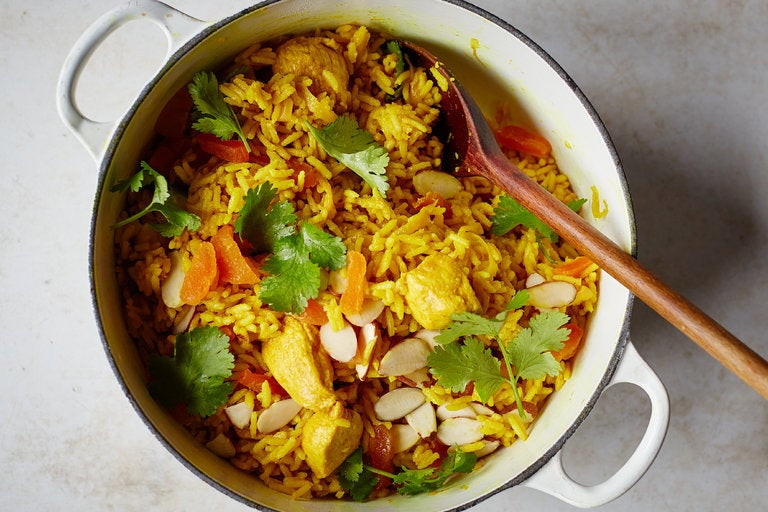

Chicken and Rice

Description
One-pot chicken and rice with spice melange, almonds, apricots, and cilantro.
Ingredients
- ¼ cup ghee (or use unsalted butter)
- 1 large yellow onion, peeled, halved and thinly sliced
- 6 green cardamom pods, crushed
- 3 whole star anise
- 1¼ teaspoons kosher salt, divided
- 6 garlic cloves, finely chopped
- 1½ teaspoons turmeric powder
- 1 pound boneless, skinless chicken breasts, cut into ¾-inch pieces
- 2¼ cups low-sodium chicken stock
- 1½ cups basmati rice
- ¼ cup chopped dried apricots
- ¼ cup sliced raw almonds, toasted
- ¼ cup chopped cilantro leaves
Steps
- In a medium saucepan with a lid, melt ghee over medium-high heat. Add onions, cardamom, star anise and ¼ teaspoon salt. Cook, stirring frequently, until onions are soft and a very deep golden brown, about 15 minutes, lowering heat if necessary to keep from burning them. Add garlic and turmeric; cook and stir for 1 to 2 minutes, or until very fragrant. Add chicken and cook for 4 minutes, stirring to coat chicken with the onion mixture.
- Add stock and remaining salt, increase the heat and bring to a boil. Add rice, stir and cover. Reduce heat to low and simmer until the rice has absorbed liquid, about 12 minutes. Remove from heat and let stand, covered, for 12 minutes. Remove lid and fluff rice with a fork.
- Transfer chicken and rice to a bowl, taking care to remove and discard cardamom pods and star anise. Garnish with apricots, almonds and cilantro. Serve at once.